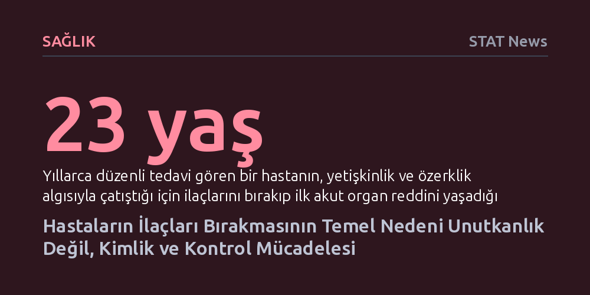

SAGLIK · STAT News · 2026-10-17
Hastaların uzun süreli tedavileri bırakmasının ardında unutkanlık veya yan etkilerden ziyade, her gün ilaç almanın benlik algısı ve özerklikle çatışması yatıyor. Tedavi uyumunu sağlamak, ilacın biyolojik etkilerini anlatmanın ötesine geçip hastanın dünyasında neyi temsil ettiğini anlamaktan geçiyor.
Tedaviyi aksatan hastaları sorumsuz veya bilgisiz görmek yerine, ilacı bırakmanın çoğu zaman bir kimlik ve beden kontrolü savunması olduğunu anlamamızı sağlar.

Uzun süreli ve kronik tedavilerin hastalar tarafından aksatılması ya da tamamen bırakılması, tıbbın en yaygın ve çözülmesi en zor açmazlarından biridir. Sağlık çalışanları bu tabloyla karşılaştıklarında akıllarına genellikle ilk olarak hastanın ilacını almayı unuttuğu, ortaya çıkan yan etkilerden rahatsız olduğu veya hastalığının ciddiyetini tam olarak kavramadığı ihtimalleri gelir. Klinik rutin bu varsayımlarla işler; hastaya hap kutuları önerilir, alarm kurması tavsiye edilir ya da hastalığın riskleri yeniden anlatılır.
Ne var ki klinik eczacılık tecrübesi, bu açıklamaların gerçeğin yalnızca çok küçük bir kısmını yansıttığını gösteriyor. Hastalarla kurulan iletişim derinleştikçe, aradaki suçluluk ve yargılanma korkusu azaldıkça bambaşka bir tablo belirir. 'Unuttum' gerekçesi, aslında hem içsel çatışmalarını ifade etmekte zorlanan hasta için hem de yoğun iş temposunda reçeteyi yazıp geçmek isteyen sağlık çalışanı için en kolay kaçış yoludur. Oysa psikiyatriden organ nakline kadar en kritik alanlarda bile hastaların hayati ilaçlarını aniden bırakmasının arkasında çok daha derin bir psikolojik dinamik işlemektedir.
Hastaların ilaç kullanımına direnç göstermesinin temelinde, her gün bir kimyasala muhtaç olma fikrinin yarattığı kontrol kaybı hissi yatar. Buradaki bağımlılık endişesi farmakolojik bir madde bağımlılığı değil; kişinin kendi bedeni, sağlığı ve günlük yaşamı üzerindeki egemenliğini bir dış etkene kaptırma korkusudur. Nitekim birçok hasta, sadece ilaç olmadan da normal bir şekilde yaşayabildiğini ve işlev görebildiğini kendine kanıtlamak amacıyla tedavisini kendi kararıyla askıya alır. Ruh sağlığı alanında ise durum daha da karmaşıklaşır; hastalar ilacın doğrudan kendi öz benliklerini, hislerini ve kişiliklerini değiştirdiğini hissederek tedaviden uzaklaşır.
Bu direnç özellikle gençlerde ve erkek hastalarda belirgin bir kırılganlık yaratır. Tedaviye bağımlı olmak; zayıflığı, sınırları ve yetersizliği kabul etmek gibi algılanabilmektedir. Ergenlik çağında böbrek nakli geçiren ve yıllarca bağışıklık baskılayıcı ilaçlarını aksatmadan kullanan bir gencin hikâyesi bu mekanizmayı tüm çıplaklığıyla özetler. Hasta 23 yaşına geldiğinde, bağımsız ve güçlü bir yetişkin olma ideali her gün ilaç içme zorunluluğuyla çatışmış, bu içsel savaşın sonucunda ilacını bırakarak hayatını tehlikeye atan ilk akut organ reddi atağını yaşamıştır. İlacı reddetmek, hasta için bedeninin ve hayatının kontrolünü yeniden eline alma çabasına dönüşmüştür.
Klinik gözlemlerle fark edilen bu psikolojik bariyerler, son yıllarda yapılan kapsamlı bilimsel çalışmalarla da desteklenmektedir. Araştırmalar, hastaların tedaviye uyup uymayacaklarını belirleyen inançların daha ilk hap yutulmadan, hatta hekim reçeteyi yazmadan önce zihinlerde kök saldığını gösteriyor. Birey, hastalığın ve ilacın hayatında ne anlama geleceğini kurgularken, ilaca duyduğu biyolojik ihtiyaç ile ilacın getirdiği kimlik tehdidini kendi terazisinde tartmaya başlar.
2024 yılında yayımlanan hastalık kimliği üzerine sistematik derleme, bu tabloya kritik bir bilimsel zemin kazandırmıştır. Çalışma, bireylerin kronik bir hastalığı kendi benlik algılarıyla nasıl bütünleştirdiklerinin, sağlık sorunlarını yönetme ve tedaviye uyum sağlama biçimlerini doğrudan belirlediğini ortaya koymuştur. Bir hasta ilacın biyolojik olarak gerekli olduğunu aklen tam olarak kavrayabilir; ancak o ilaç her gün hasta olduğunu hatırlatan acı bir simgeye dönüştüğünde, içsel benliği dışarıdan gelen bu müdahaleye direnmektedir.
Kronik tedavilerde yaşanan bu uyumsuzluk krizini aşmak, hastaya sunulan reçetelerden ziyade sağlık çalışanlarının sorduğu soruları değiştirmeyi gerektirir. Hastaya yalnızca 'Hapınızı unuttunuz mu?' veya 'Bir yan etki yaşadınız mı?' diye sormak, doğru ama eksik yanıtlar üretir. Bu yüzeysel sorgulama, hastanın ilacı bırakarak korumaya çalıştığı kimlik alanını görünmez kılar.
Sağlık profesyonellerinin artık daha cesur ve anlam arayan sorular sorması gerekir: Bu ilaç sizin için ne anlam ifade ediyor? Her gün bu ilaca ihtiyaç duymak size kendinizi nasıl hissettiriyor? İçinizde bu tedaviye teslim olmaya direnen bir parça var mı? Yazarın da vurguladığı gibi, "Bazen bir hasta ile tedavisi arasındaki en büyük engel farmakoloji değildir." Tedavi başarısını kalıcı kılmak, yalnızca ilacın vücutta nasıl çalıştığını anlatmaktan değil; o ilacın hastanın zihninde neyi temsil ettiğini anlamaktan geçer.